I'll demonstrate a new module, Regex.pm, which implements regexes from nothing, in Perl. The implementation is very similar to the way Perl's own regexes are implemented, so you'll get a good idea of how Perl's regexes work on the inside.
Here's the basic strategy. We'll see a simple kind of 'machine' that reads some input, one character at a time, and then, depending on what's in the input and on the various wheels and gears in the machine, says either 'yes' or 'no'. The machines are simple, and it turns out that if we have a regex, it's not hard to construct a machine that says 'yes' for exactly those strings that match the regex, and 'no' for all the other strings.
When our program wants to see if S matched /R/, it'll do something like this:
Maybe this sounds bizarre, but bizarre or not, it's what Perl does. If you can follow what we do in this article, you'll know what Perl is really up to when it performs a regex match.
We're on a tight budget here, so our machines will be made of circles and arrows instead of wheels and gears. Here's a machine:
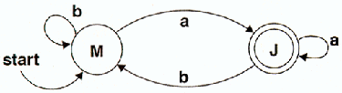
Let's see if this machine says 'yes' to the string "abaa". How do we do that?
We start by putting a penny down on the M circle, because the M circle is the 'start circle.' We can tell that M is the start circle because it has that arrow pointing to it that says 'start'. The letter M could have been anything; it's not actually part of the machine. I just put it on so you would know which circle I meant.
Now the machine will read the first character in the string: "a". There's an arrow leading out of the M circle that's labeled "a", so we move the penny along the arrow from M to J.
Next the machine will read the "b". The penny moves back to M. Then the machine reads another "a", and the penny moves back once more to J. Finally, the machine reads the last "a", and the penny follows the "a" arrow that leads from J back to J.
The penny is finally on J. We're done. So, how do we tell if the machine said 'yes'? The rule is this: Some circles, like J, are double circles. These are called 'final circles.' At the end of the input, if there are any pennies on final circles, the machine says yes. If no pennies are on final circles, the machine says 'no'. In this case, there's a penny on J, so the machine says 'yes'.
Now, that's not so hard to do, and it's easy to see that this machine will say 'yes' to some strings and 'no' to others. It so happens that it says 'yes' to any string that is matched by the regex /^(a|b)*a$/, and 'no' to all the strings not matched. We say that the machine is equivalent to the regex.
Soon we'll see how to make machines that are equivalent to any regex we like. First, though, we'll add a couple of features to the machines that will make this easier.
So far every arrow we've seen has been labeled with a letter. But some machines have unlabeled arrows, like this:
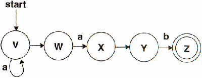
The instant a penny arrives in any circle with a blank arrow leading out of it, we place another penny on the circle at the far end of the blank arrow.
Let's look at the machine above and see what it says about "ab". The start circle is V, so we start out by putting a penny there. And then, because there's a blank arrow from V to W, we immediately put a second penny on W. Now the machine is ready to read input. It reads the "a". The penny on V moves along the arrow to V, and the penny on W moves along the arrow to X, so we now have pennies on V and X. Now, because there's a blank arrow leading from X to Y, we place a third penny on Y, and because there's a blank arrow from V to W, we place a fourth penny on W.
Next the machine reads "b". The penny on Y moves to Z. But what happens to the pennies on V, W, and X? There's a special rule for this: Pennies that have nowhere to go must leave. We take away the pennies on V, W, and X. Only the penny on Z remains.
Now the machine is done reading the input. There's a penny on Z, which is a final circle, so the machine says 'yes'.
Sometimes a machine will have two arrows from the same circle that also have the same label:
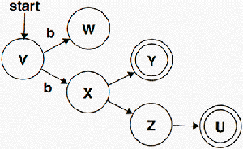
The penny here starts on V. What happens when this machine reads the string "b"? There's a "b" arrow from V to W and also from V to X. The rule here is simple: The penny clones itself. One clone goes one way and the other goes the other way, and we end up with pennies on both W and X.
You'll notice blank arrows from X to Y and from X to Z; as soon as the penny arrives at X, we put new pennies on Y and Z also. Then, because a penny just arrived at Z, we put one on U as well.
Before we see how to turn a regex into a machine, let's re-cap the rules for moving pennies:
Perhaps you can imagine that it might not be hard to write a program to carry out these four simple rules, to keep track of where the pennies are, and to yield the final 'yes' or 'no'.
And in fact that's exactly how regexes work. Perl turns the regex into a machine, simulates the positions of the pennies, and at the end of the input reports whether any pennies are on final circles.
Now the only question left is: How can we turn a regex into a machine?
First, we're going to assume that all our regexes are anchored at the front and the back. That is, we're only going to deal with regexes that look like /^P$/, where P might be complicated. It turns out that this doesn't give anything away, because if /Q/ is some regex that isn't anchored, then /^.*Q.*$/ is a completely equivalent anchored regex that matches the same strings. If someone wanted us to make a machine for /Q/, we could make one for /^.*Q.*$/ instead, and they'd never be the wiser. From now on I'm going to leave out the ^ and the $, because it makes the examples easier to read.
There are two kinds of regexes. They're either very simple things like /x/, or they're more complex things, built out of simpler regexes. For example, if P is a regex, then P* is also a regex. That means we're going to have to do two things: We'll have to see how to build simple machines for the simple regexes, and we'll have to see how to combine those simple machines into more complicated machines.
Here's the machine for the regex /a/:
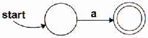
Stare at this a while to convince yourself that it really says 'yes' only for the string "a" and not for any other string. What does it say about the empty string? What about "b"? "aa"?
And here's an even simpler machine. It's equivalent to //.
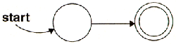
Remember that I left out ^ and $, so // really matches only the empty string, and the equivalent machine will say 'yes' only for the empty string.
Now let's suppose we already have machines for /P/ and /Q/, and let's try to figure out how to make a machine for /P|Q/. That's pretty easy.
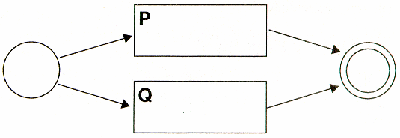
The penny starts on the left. Clones are immediately created and move to the circles that used to be the start circles for P and for Q. For the machine to say 'yes', the P penny must make its way to what used to be P's final circle, or the Q penny must make its way to what used to be Q's final circle; if either of those things happen, that penny will clone itself to the real final circle on the far right. If neither of those things happens, no penny will escape from either machine P or machine Q. Any string that P would have matched will get a penny through P to the final circle, and any string that Q would have matched will get a penny through Q to the final circle. So this machine says 'yes' for any string that either P or Q would have said 'yes' to, and not to any other strings. That's exactly what we wanted.
How about if we have machines for /P/ and /Q/, and we want to make a machine for /PQ/? We can do it like so:
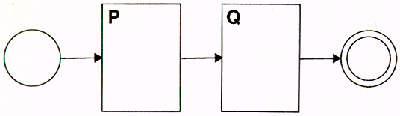
It's easy to see that we can chain together as many machines as we want this way. For example, here is a machine that is equivalent to the regex /perl/:
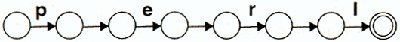
Now let's tackle P+, which turns out to be a little easier than P*.
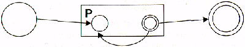
Once the penny passes through P, it clones itself. One clone immediately moves to the final circle, and one moves back to the beginning of P to try again, in case there are more Ps coming up.
Now that we've seen this, P* is easy too; we just short-circuit the beginning to the end, so that the penny doesn't have to go through P even once.
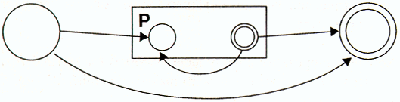
Oh, now we're done.
Well, we left out character classes. But [abc] is just the same as (a|b|c), so we can handle that by pretending that the user wrote it that way.
We left out \d, \s, and all those things. But those are just character classes. '.' is also a character class if we don't mind writing it as (\000|\001|...|\255). That makes the machine big and inefficient, but hey, it works. We'll see later on how to make it better.
We left out ?. But P? is just the same as (P|), so it's really there too. And we left out {n}. But P{3} is just the same as PPP, so we really don't need {n}. Similar arguments work for {m,} and {m,n}.
We left out the non-greedy quantifiers. But those don't change whether the regexes will match, only how the regexes match, so they don't affect our program. We can ignore them.
We left out ^ and $, but they're in there by default; if you want to take them away you can attach .* at the beginning or the end or both.
We left out zero-width assertions like \b and (?:...) and (?!...). But this is an introductory article, so I made a command decision to leave them out. We also left out backreferences, but I'll show how to put them in later, just to prove I'm not a slacker.
By the way, this construction for turning regexes into machines was invented in 1968 by a fellow named Ken Thompson. You may have heard of Thompson: He and Dennis Ritchie invented Unix around the same time.
The module has three parts. It has a part for turning strings into regexes, a part for turning regexes into machines, and a part for shuffling the pennies around. Here's a program that looks to see whether the string "abbbbb" matches the pattern /^ab+$/.
use Regex;
$regex = Regex->parse('ab+'); # Parse the string
$machine = NFA->compile($regex); # Build the machine
# Does "abbbbb" match /ab+/ ?
$result = NFA_Exec->match($machine, 'abbbbb');
print "It ", ($result ? "did ": "did not "), "match.\n";
The output, as we would hope, is
It did match.
Now you can go try it yourself. Regex.pm is at http://www.plover.com/~mjd/perl/Regex/. You'll find a sample grep program in the directory.
Is this really what Perl does? Pretty much, except Perl's regexes are written in C, while Regex.pm is written in Perl. Perl parses the regex string into an internal format, and then turns the internal format into a machine. Perl's machine works a little differently from the ones I showed, but the principle is the same.
Constructing the machine for a certain regex can take a relatively long time, but once it's constructed, running an input through it is very fast, and you can run lots of different inputs through it without reconstructing it. That is just what Perl does; when you first run your program, Perl turns all your regexes into machines and saves the machines for later. Then it can do fast pattern-matching with any of them because the machines are already on the shelf waiting to be used.
Actually, I lied. Perl can't always build the machines as soon as you run your program. Consider this program, which reads an input, and prints out each line if it happens to contain its own line number ($. is the line number of the current line of input):
while (<>) {
print if /$./;
}
Perl can't possibly build the machine for /$./ as soon as your program is run, because /$./ changes from line to line. Perl has to build a new machine every time through the loop. That makes this a slow program.
Let's consider a slightly different program. This one is like the Unix grep command: you give it a pattern as the command-line argument, and it prints all the lines from its input that match that pattern:
my $pat = shift;
while (<>) {
print if /$pat/;
}
Again, Perl rebuilds the machine every time through the loop. It does this because it is afraid that $pat might have changed since last time, and it is too dumb to see that $pat never actually changes.
If only there were a way to tell Perl that $pat never changes!
There is a way to tell Perl that $pat never changes: the /o modifier.
my $pat = shift;
while (<>) {
print if /$pat/o;
}
Normally, Perl likes to build its machine when it compiles the rest of your program. For regexes with variables in them, it rebuilds the machine every time it uses the regex - unless you put in /o. If you do that, Perl builds the machine for the regex exactly once (o is for 'once'), the first time it uses the regex, and puts it on the shelf for later. After the first time, it assumes that the variables are always the same, and uses the machine from the shelf instead of making a new one every time.
Beginners are always writing slow programs like this:
my @pats = ('fo*', 'ba.', 'w+3');
while (<>) {
foreach $pat (@pats) {
print if /$pat/;
}
}
Again, Perl has to build a new machine every time $pat changes. If there are a million lines in the input, Perl builds the same three machines a million times each. You can make this program much faster by writing it like this:
my @pats = ('fo*', 'ba.', 'w+3');
my $pat = join('|', @pats);
while (<>) {
print if /$pat/o;
}
By arranging to have only one pattern that never changes, instead of three patterns that are used alternately, we can tell Perl to build a regex machine exactly once instead of three million times.
I promised to show you how to do this to prove I wasn't a slacker. You can skip this section if you don't care how to do backreferences, as long as you agree first that I'm not a slacker.
Just to make things a little easier to discuss, we'll pretend that you can have only one backreference in each regex. \1 will work, but \2 and \3 won't. After you see how to make \1 work, it'll be easy to see how to make the rest work too.
To do backreferences, we need to add a tape recorder to each penny. If the tape recorder is on, it records the input that the machine is receiving.
We also add three new kinds of circles: A 'record' circle; a 'stop' circle, and 'replay' circle. When the penny enters a 'record' circle, its tape recorder starts recording. When the penny enters a 'stop' circle, it stops recording.
The 'replay' circle is a little different. It has exactly one outgoing arrow. When the penny enters the 'replay' circle, it stops and rewinds the tape. Then it waits on the replay circle while the machine reads more input, and it compares the input to what's on the tape. If the input doesn't match what's on the tape, or if the input runs out before the tape does, the penny dies. But if the input does match the tape, the penny immediately moves off the 'replay' circle along the outgoing arrow, and then continues moving normally.
If P is a regex, here's how we build the machine for /(P)/; it's just like /P/ except it also records the input that matched P:
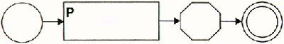
Here's the machine for /\1/:
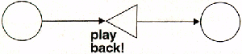
Here's the machine for /(a+)\1/:
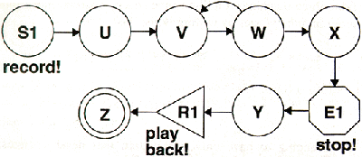
Let's see what happens when this machine reads the string "aaaa". We put a penny on S1, the start circle, and the penny immediately begins recording on its tape recorder. The penny clones itself and its tape recorder, and the clones move to U and to V.
Now, every time the machine reads an "a", a penny gets through to W with an additional "a" written on its tape. This penny moves through to E1, which shuts off the tape recorder. The first such penny has just "a" on is tape; it arrives at R1; when the machine reads the second "a" it moves to Z, and then on the third "a" it dies. But the second penny to come out at X has two "a"s on its tape; it gets out of R1 just after the machine reads the third and fourth "a"s, and it gets to Z just in time for the end of the input. The penny on Z at the end of the input signals a 'yes', and the "aa" on its tape means that$1 is "aa".
There were two other pennies that came out at X, one with "aaa" and one with "aaaa" on its tape. But those pennies stayed stuck in R1 waiting for the machine to read more "a"s.
Now, if you want to have more backreferences, you just add more tape recorders to each penny. And you have one kind of 'record', 'stop', and 'replay' circle for every backreference. /\3/ becomes a circle that says 'replay tape 3', and the fifth ( in a regex becomes a circle that says 'start recording on tape 5'.
The module's NFA->compile() method transforms a regex into a machine, following pretty much the same steps that we did in the article. It starts with the sub-expressions, and then combines smaller machines into one large machine. The structure for a machine is so simple that I'll just give an example:
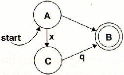
This has the following representation:
{
A => { '' => B, # Unlabeled arrow from A to B
'x' => C, # Arrow labeled 'x' from A to C
},
B => { }, # No arrows from B
C => { 'q' => B }, # Arrow labeled 'q' from C to B
Symbols => [ A, B ], # Start and final circles.
}
This is convenient because it's easy to look up where a given penny should move to when the machine reads a certain character in the input.
The best way to see what the module is really doing is to run the test program under the debugger and ask it to print out the data structures. Once you know about the machines and the pennies, the whole thing should be almost transparent. (Warning: The circle names are generated automatically, so they all have names like 'Saa01'.)
The module performs a very ordinary simulation of where the pennies are after each character in the input. Here's a simple example: When the input has run out, the simulator just looks to see if there is a penny on the final circle, something like this:
foreach $s ($self->circles_with_pennies) {
if ($self->{machine}->is_final_circle($s)) {
# Aha! We win!
return 1;
}
}
# No penny on a final circle; pattern match fails.
return 0;
The real code uses technical jargon, but the code is identical except for the jargon. You can find the code in the function NFA_Exec->final_state().
Listing 1: Terminology
Perl doesn't really do it exactly the way I showed you. It's close, and the principle is the same, but there's one big difference. The difference is that Perl never moves more than one penny at a time.
Whenever a penny clones itself, Perl makes a choice about which one to move, and saves the locations of the others. If the penny that Perl is moving dies, Perl backtracks to one of the other pennies, and picks up where it left off.
This has a number of benefits. If the penny Perl happens to be moving ends on the final circle at the end of the input, then Perl knows that the input matched, even though it didn't move the other pennies, so it was able to save time.
Alternately, if the programmer asks for a second match, Perl just merely to go back and try some more pennies until it finds a second one that wins; the path that the second penny took is the second match. When you move all the pennies at once, you get all the matches at once too, and there's no good way to make use of all the information you get.
When a penny clones itself, Perl has to make a choice about which penny to follow and which to save for later. By making the decision one way, it gets the greedy operators *, +, and ?; by choosing the other penny in each case, the operators become the non-greedy versions, *?, +?, and ??.
The one-penny-at-a-time system that Perl uses is also more convenient for handling backreferences. Instead of having to associate a set of tape recordings with each penny, Perl only needs to have one set of tape recordings for the single current penny, and some saved tape recordings for the pennies it might have to backtrack to.
However, the one-penny-at-a-time system also has a terrible drawback: For some patterns, the number of saved pennies can get huge, and Perl can spend literally hours returning to one saved penny after another. For example, consider the pattern /^(\d+)*$/. For a complete discussion of a similarly rotten expression, see Jeffrey Friedl's article in TPJ #2. Here's the short summary: Any idiot can see that a string like "1234567890:" won't match because of the ":" on the end. But Perl wastes a lot of time trying pointless backtracking.
Perl sees the *, and it needs to decide how many times to repeat the preceding expression, the (\d+). This means it gets to use as many \d+'s as it wants to. First it lets \d+ match 1234567890, using only one \d+, but that doesn't work, because of the ":", so Perl backs off and lets \d+ match just 123456789, and it uses a second \d+ to match the 0, but that doesn't work either. So it retreats and lets the first \d+ match 012345678, and the second match 90. That fails, so it tries making the second \d+ match only the 9, and uses a third instance of \d+ for the 0. That fails too, so it shortens the first \d+ again to match only the 01234567. And so on. What a disaster.
The many-pennies-at-once approach scores a huge win here. The machine doesn't have very many circles, at most two for every symbol in the regular expression, and so there need never be very many pennies. Suppose two pennies happen to move onto the same circle. The one-at-a-time approach would have dealt with them separately, at different times. But the many-pennies-at-once approach can replace these two pennies with one penny. (Only if we're ignoring backreferences. We can't join pennies if we're saving backreferences, because the two pennies probably have different recordings on their tapes.) The result: Fewer pennies get moved, and there's no backtracking, and the regular expression finishes quickly instead of slowly.
The program at http://www.plover.com/~mjd/perl/Regex/demo.pl demonstrates this: It builds and runs the equivalent Regex.pm penny machine first, and that takes less than two seconds, even on a 75 MHz Pentium. Then it tries using Perl's built-in regular expressions, and that takes hours, even on a speedy workstation.
For an easy project, try adding the '.' symbol. You'll have to modify the parser a little, and machines will need to have a new kind of arrow that indicates a transition on any input at all. From there it's only a small step to adding general character classes.
OMAR (Our Most Assiduous Reader) might enjoy adding backreferences to the Regex module. Probably the most difficult part will be fixing the string-to-regex parser, which is a terrible hack; the rest of the code is much more flexible.
If you're interested in the details of how Perl's internal machines work, you might enjoy running
perl -Dm -ne 'print if /SOMETHING/';
to see what happens. On a Perl compiled with the -DDEBUGGING flag, -Dm displays the details of the regular expression machinery, both at the times that the machines are constructed and when they're used. Be prepared for surprises! For example, the * in /x*/ is different from the * in /(xy)*/. The former is a real *, but the latter is treated as if you had written /(xy){0,32767}/ instead.
See http://www.plover.com/~mjd/perl/ for further developments on B-trees and other Perl odds and orts.
This column needs a name. What should I call it? It should characterize the subject matter (Previous articles: Infinite lists; B-Trees) and sound cool. Mail me suggestions; the best one will receive my grateful thanks in TPJ #11.
_ _END_ _
Understanding Regular Expressions, Jeffrey Friedl, The Perl Journal #2, or Perl Utilities Guide, O'Reilly & Associates, Sebastopol, CA, pp. 186–202.
Introduction to Compiler Construction, Thomas W. Parsons, pp. 20–46 and especially 40–46. Computer Science Press, New York, 1992.
Regular Expression Search Algorithm, Ken Thompson. Communications of the ACM, vol. 11, no. 6, pp. 419–422.